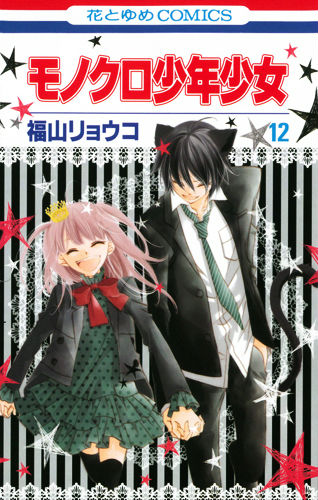

INFORMACIÓN
Titulo:
Monokuro
Autor:
Fukuyama Ryoko
Genero:
Romance, Drama, Comedia, Fantasía, Vida Escolar
Kureha Mimachi, una chica de 15 años que acaba de transferirse a Shiritsu Kenhono High School. Sin embargo, hay algo extraño en esta escuela… En realidad es una escuela donde los príncipes y princesas de tipo bestia van... A pesar de que Kureha es humana, ella está allí como una manera de ayudar a los estudiantes a llevar sus vidas en paz con los seres humanos y tiene el papel como el "conejo". ¿Será capaz de sobrevivir sin ser comida por los estudiantes ...? Sólo el tiempo y sus guardaespaldas ocultos será capaz de responder a eso...